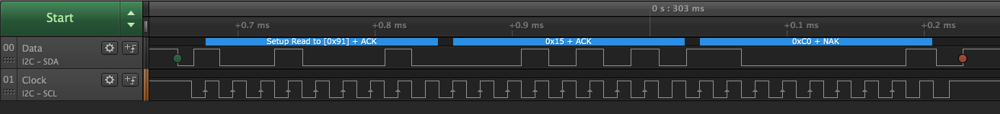

I2C
I2C (Inter-Integrated Circuit) is a communication protocol allowing bi-directional communication between two or more devices using only two wires.
The two bus wires used are usually labelled SDA (Data) and SCK (Clock). Typical clock speeds are 100KHz for low speed devices with speeds of 3.4MHz possible for high speed devices. Common speeds encounterd by hobbyists are 100KHz and 400KHz.
Devices on the bus will act as either a master or a slave devices. Both master and slave can transmit and receive on the bus.
Device Addresses
The use of multiple devices on the single bus is made possible through device addresses. Each device on the bus is allocated a specific address. Some devices allow the address to be configured to one or more alternatives to help with address collision. This is achieved using address pins which would be tied low or high depending upon the device and the address required.
Addresses are 7-bits in length giving a maximum number of 128 devices on the bus. In practice there are often far fewer due to bus capacitance issues.
Read / Write Bit
A Master device will start the communication session by sending the address of the device it wishes to communicate with along with a single bit that indicates the mode of the communication: read or write. The combination of the 7-bit address and the single read / write bit gives an eight bit packet header.
Pull-up Resistors
Both of the bus lines (SDA and SCK) require pull-up resistors to be connected to them. The value of the pull-up resistor will depend upon the capacitance of the bus. The number of components on the board, type of substrate used will all influence the bus capacitance.
Most I2C breakout boards are supplied with pull-up resistors already on the breakout board. In the case where one is not supplied then a 4K7 resistor is usually good enough for prototyping.
This in-depth article on the Effects of Varying I2C Pull-Up Resistor explains why pull-up resistors are important and how to determine the ideal value for the resistor.
Further Information
This Wikipedia article contains a description of the protocol, the various modes and the bus characteristics.
Netduino I2C Pins
The Netduino has two pins allocated for the I2C protocol. These pins are labelled SD (for SDA) and SC (for SCK) and can be found above the 14 digital pins on the right of the board as viewed below:

TMP102 I2C Temperature Breakout Board
Use of the I2C bus on the Netduino will be illustrated using a temperature module. The TMP102 is a commonly available temperature module capable of measuring temperatures in the range -40°C to +125°C with a maximum resolution of 0.0625°C. This device uses I2C and can be powered by a 3.3V signal, ideal for use with Netduino.
Purchasing
TMP102 breakout modules can be purchased from Sparkfun.
Using I2C on the Netduino
Reading the current temperature from the TMP102 will illustrate the basic software requirements for successful communication with an I2C device, namely a simple read operation.
Wiring up the TMP102 and Netduino
Firsly, ensure that the Netduino is disconnected from power and the USB connector. Once complete, place the TMP102 into a piece of breadboard (you will need to solder male pins to the breakout board first).
Next make the following connections between the temperature breakout board and the Netduino:
| TMP102 Pin Name | Netduino Pin Name | Wire Color in Photo Below |
|---|---|---|
| SDA | SD | Blue |
| SCK | SC | Yellow |
| Vcc | 3.3V | Red |
| GND | GND | Black |
| ADD0 | GND | Black |

There are two yellow and two blue leads in the photo. The second blue and yellows lead are connected to a logic analyzer, more on this later.
Software
Open Visual Studio (or Xamarin Studio) and follow the instructions on the Getting Started page and start a new project. Copy the following code and paste it into the program.cs file replacing the default code.
using Microsoft.SPOT;
using Microsoft.SPOT.Hardware;
using System.Threading;
namespace TMP102
{
public class Program
{
public static void Main()
{
//
// Create a new I2C device for the TMP102 on address 0x48 with the clock
// running at 50 KHz.
//
I2CDevice tmp102 = new I2CDevice(new I2CDevice.Configuration(0x48, 50));
//
// Create a transaction to read two bytes of data from the TMP102 sensor.
//
byte[] buffer = new byte[2];
I2CDevice.I2CTransaction[] reading = new I2CDevice.I2CTransaction[1];
reading[0] = I2CDevice.CreateReadTransaction(buffer);
while (true)
{
//
// Read the temperature.
//
int bytesRead = tmp102.Execute(reading, 100);
//
// Convert the reading into Centigrade and Fahrenheit.
//
int sensorReading = ((buffer[0] << 4) | (buffer[1]) >> 4);
double centigrade = sensorReading * 0.0625;
double fahrenheit = centigrade * 1.8 + 32;
//
// Display the readings in the debug window and pause before repeating.
//
Debug.Print(centigrade.ToString() + " C / " + fahrenheit.ToString() + " F");
Thread.Sleep(1000);
}
}
}
}
Reconnect the Netduino to the USB cable then save and run the application. If everything has been connected correctly you will start to see temperature measurements in the Application Output / Debug window.
Key Elements
The data sheet for the TMP102 states that the default address for the TMP102 is 0x48, so the first task is to create a new I2CDevice object that defines how we connect to the TMP102:
I2CDevice tmp102 = new I2CDevice(new I2CDevice.Configuration(0x48, 50));
The above code creates the tmp102 object where the device has an address of 0x48 and the communication speed will be 50KHz.
Temperature readings are returned from the TMP102 as a two byte value and so a buffer is needed to store the results of the read opertiation:
byte[] buffer = new byte[2];
NETMF uses transaction to communicate with I2C devices. Using an array of transactions allows multiple operation to be completed at the same time. In this case, there is only one read operation and the array of transations consists of a single element:
I2CDevice.I2CTransaction[] reading = new I2CDevice.I2CTransaction[1];
reading[0] = I2CDevice.CreateReadTransaction(buffer);
More complex cases allow multiple operations to be executed as a simple ooperation simply by adding more transations to the array.
In the above code, an array reading is created to hold the single transaction that should be executed. Two transaction types are supported and these are created with the I2CDevice.CreateReadTransaction and the I2CDevice.CreateWriteTransaction methods.
At this point the initialisation and set up is complete. The main program loop is entered and the temperature reading is read repeatedly using the following statement:
int bytesRead = tmp102.Execute(reading, 100);
The Execute method above takes an array of transactions, in our case the single read transaction and a timeout value in milliseconds.
The remainder of the code simply calculates the temperature using the formula derived from the data sheet.
Program Output
Successful deployment of the application should reduce in a stream of temperature readings, one per second:
22.5625 C / 72.612500000000011 F
22.5625 C / 72.612500000000011 F
22.5625 C / 72.612500000000011 F
22.5625 C / 72.612500000000011 F
22.5625 C / 72.612500000000011 F
22.5625 C / 72.612500000000011 F
Logic Analyser Output
As noted earlier, a second yellow and blue wire can be seen connected to the circuit. These allow the logic analyzer to be connected to the circuit.
The logic analyzer was configured to read data for two seconds. The data was then processed by an I2C protocol decoder. This resulted in the following trace:

The trace has been annotated to indicate the signal line and the protocol being analyzed.
Starting from the left of the data signal:
- Start bit indicated by the green dot
- Device address and access mode (0x91)
- Two data bytes (0x15 and 0xC0)
- Stop bit indicated by the red dot
It is interesting to note that the device address and mode byte are encoded with the device address transmitted first followed by the mode bit. I2C uses 1 to represent a read transaction and 0 to represent a write transaction.
In the case of the above application, the address is 0x48 and Netduino is reading from the device. Read mode is indicated by a 1 and write by a 0. This results in a packet header of 0x91:
| Item | b7 | b6 | b5 | b4 | b3 | b2 | b1 | b0 | Notes |
|---|---|---|---|---|---|---|---|---|---|
| Device address | 1 | 0 | 0 | 1 | 0 | 0 | 0 | 0 | Device address shifted left by one place |
| Read / Write indicator | 0 | 0 | 0 | 0 | 0 | 0 | 0 | 1 | Read = 1 |
| Packet header | 1 | 0 | 0 | 1 | 0 | 0 | 0 | 1 | Address or-ed with mode bit = 0x91 |
When reading the logic analyzer traces, read operations to this device have the first byte set to 0x91 whilst write operations to the same device have the first byte set to 0x90.
Writing to Registers and Multiple Transactions
As noted above, the Execute method can execute multiple transactions in a single call. This will be illustrated in the following application that will:
- Reconfigure the TMP102 to return a 13-bit temperature reading
- Read the temperature as a 13-bit value
Configuration of the TMP102 is managed by a number of registers. It should be noted that the use of registers to store data and configuration is common to both I2C and SPI devices.
Registers
In the above example the application used the default power on state for the TMP102. The default state allows the application to read the temperature. The temperature itself is maintained in one of the internal registers and the read operation is simply returning the value in the register.
The number of registers and their meaning are ususlly documented in the data sheet for the component in question.
TMP102 Registers
The TMP102 has five registers:
- Current temperature
- Configuration
- TLOW
- THIGH
- Pointer
The current temperature register is read only and is the one that the above application reads. The remaining four registers are read-write registers and can be used to change the operation of the TMP102.
Pointer Register
The pointer register is an 8 bit wide register that indicates which of the remaining four registers should be accessed. Applications can write to bits 0 and 1 of this register, bits 2-7 should be set to zero. The pointer register is interpreted as follows:
| b1 | b0 | Description |
|---|---|---|
| 0 | 0 | Temperature register |
| 0 | 1 | Configuration register |
| 1 | 0 | TLOW register |
| 1 | 1 | THIGH |
The default power on value of the TMP102 pointer register is 0 (temperature register).
Temperature Register
The temperature register holds 0°C at power up. Folllowing a conversion the temperatutre reading is transferred to the temperature register. The two byte register holds a 12 (or 13) bit value indicating the last reading along with a single bit indicating if this is a 12 or 13 bit reading.
12-bit Reading:
Byte 1:
| b7 | b6 | b5 | b4 | b3 | b2 | b1 | b0 |
|---|---|---|---|---|---|---|---|
| T11 | T10 | T09 | T08 | T07 | T06 | T05 | T04 |
Byte 2:
| b7 | b6 | b5 | b4 | b3 | b2 | b1 | b0 |
|---|---|---|---|---|---|---|---|
| T03 | T02 | T01 | T00 | 0 | 0 | 0 | 0 |
13-bit Reading:
Byte 1:
| b7 | b6 | b5 | b4 | b3 | b2 | b1 | b0 |
|---|---|---|---|---|---|---|---|
| T12 | T11 | T10 | T09 | T09 | T08 | T07 | T05 |
Byte 2:
| b7 | b6 | b5 | b4 | b3 | b2 | b1 | b0 |
|---|---|---|---|---|---|---|---|
| T04 | T03 | T02 | T01 | T00 | 0 | 0 | 1 |
Configuration Register
The configuration register controls how the TMP102 functions. This register is a 16-bit register and as noted, this is a read-write register. The control register allows the configuration of the following:
- Extended Mode
- Alert
- Conversion Rate
- Shutdown Mode
- Thermostat Mode
- Fault Queue
- Copnversion Resolution
- One-Shot/Conversion Ready
For the purpose of this exercise the application will be changing only the Extended Mode (EM) bit in the control register. Setting this bit to 0 sets the TMP102 to use 12-bit mode. A value of 1 will set the TMP102 to use 13-bit mode.
From the data sheet, the EM bit is bit 4 in the second byte of the configuration register.
Writing To Registers
The Pointer Register changes the register being adccessed. Multiple reads will use the previous value in the Pointer Register if a new value is not supplied. Write opertaions require the pointer register to be supplied for each write operation.
Software
The specification for the application was defined as follows:
- Reconfigure the TMP102 to return a 13-bit temperature reading
- Read the temperature as a 13-bit value
The code for this becomes:
using Microsoft.SPOT;
using Microsoft.SPOT.Hardware;
using System.Threading;
namespace TMP102ReadWrite
{
public class Program
{
/// <summary>
/// Convert a byte to a two character hex string.
/// </summary>
/// <returns>Hexadecimal representation of the byte as a string.</returns>
/// <param name="val">Byte to convert into a string.</param>
public static string ByteToHex(byte val)
{
const string hex = "0123456789abcdef";
return(new string(new char[] { '0', 'x', hex[(val & 0xf0) >> 4], hex[val & 0x0f] }));
}
/// <summary>
/// Reads the TMP 102 configuration.
/// </summary>
/// <remarks>
/// Create transactions to read the current configuration. A write transaction
/// is necessary to change the pointer register to point to the configuration
/// registers. A read transaction will then read the current configuration.
/// </remarks>
/// <param name="device">TMP102 I2CDevice object to read the configuration from.</param>
private static byte[] ReadTMP102Configuration(I2CDevice device)
{
I2CDevice.I2CTransaction[] readConfiguration = new I2CDevice.I2CTransaction[2];
byte[] pointerBuffer = new byte[1];
pointerBuffer[0] = 1;
readConfiguration[0] = I2CDevice.CreateWriteTransaction(pointerBuffer);
//
byte[] currentConfig = new byte[2];
readConfiguration[1] = I2CDevice.CreateReadTransaction(currentConfig);
device.Execute(readConfiguration, 100);
Debug.Print("Configuration register: " + ByteToHex(currentConfig[0]) + ", " + ByteToHex(currentConfig[1]));
return (currentConfig);
}
/// <summary>
/// Main program loop.
/// </summary>
public static void Main()
{
//
// Create a new I2C device for the TMP102 on address 0x48 with the clock
// running at 50 KHz.
//
I2CDevice tmp102 = new I2CDevice(new I2CDevice.Configuration(0x48, 50));
//
// Read the configuration prior to updating the conversion mode to 13-bit mode.
//
byte[] currentConfig = ReadTMP102Configuration(tmp102);
//
// Now we have the configuration, set up to change the configuration between
// 12 and 13 bit mode and read data from the sensor.
//
I2CDevice.I2CTransaction[] changeConfig = new I2CDevice.I2CTransaction[1];
byte[] newConfiguration = { 0x01, currentConfig[0], (byte) (currentConfig[1] | 0x10) };
changeConfig[0] = I2CDevice.CreateWriteTransaction(newConfiguration);
tmp102.Execute(changeConfig, 100);
Thread.Sleep(1000);
//
// Now setup for reading the temperature.
//
I2CDevice.I2CTransaction[] reading = new I2CDevice.I2CTransaction[2];
byte[] repointToTemperatureRegister = { 0x00 };
reading[0] = I2CDevice.CreateWriteTransaction(repointToTemperatureRegister);
byte[] temperatureData = new byte[2];
reading[1] = I2CDevice.CreateReadTransaction(temperatureData);
while (true)
{
//
// Read the temperature.
//
int bytesRead = tmp102.Execute(reading, 100);
Debug.Print("Temperature data: "+ ByteToHex(temperatureData[0]) + ", " + ByteToHex(temperatureData[1]));
//
// Convert the reading into Centigrade and Fahrenheit.
//
int sensorReading = 0;
double centigrade = -273.15;
double fahrenheit = centigrade * 1.8 + 32;
if ((temperatureData[1] & 0x01) == 1)
{
sensorReading = ((temperatureData[0] << 5) | (temperatureData[1]) >> 3);
Debug.Print("13-bit value retrieved.");
}
else
{
sensorReading = ((temperatureData[0] << 4) | (temperatureData[1]) >> 4);
Debug.Print("12-bit value retrieved.");
}
centigrade = sensorReading * 0.0625;
fahrenheit = centigrade * 1.8 + 32;
//
// Display the readings in the debug window and pause before repeating.
//
Debug.Print(centigrade.ToString() + " C / " + fahrenheit.ToString() + " F");
Thread.Sleep(1000);
}
}
}
}
Key Elements
The application will read the configuration twice, once to verify the power on state, the second time to verify that the change from 12-bit mode to 13-bit mode has been applied.
private static byte[] ReadTMP102Configuration(I2CDevice device)
This method will take an I2CDevice object and read the configuration. The method uses two transactions, a write transaction will adjust the pointer register to point to the configuration register:
I2CDevice.I2CTransaction[] readConfiguration = new I2CDevice.I2CTransaction[2];
byte[] pointerBuffer = new byte[1];
pointerBuffer[0] = 1;
readConfiguration[0] = I2CDevice.CreateWriteTransaction(pointerBuffer);
The second transaction reads the configuration from the TMP102:
byte[] currentConfig = new byte[2];
readConfiguration[1] = I2CDevice.CreateReadTransaction(currentConfig);
Finally, the method executes the two transactions and displays the configuration inhexadecimal:
device.Execute(readConfiguration, 100);
Debug.Print("Configuration register: " + ByteToHex(currentConfig[0]) + ", " + ByteToHex(currentConfig[1]));
A key point to note here is that a write and a read transaction are both executed together in a single method call.
Executing the above will result in a write following by a read:

The second green dot indicates the change from the write operation (setting the pointer register) to the read operation (reading the configuration register).
Next operation is to change the mode to 13-bit mode by changing the configuration register:
byte[] currentConfig = ReadTMP102Configuration(tmp102);
I2CDevice.I2CTransaction[] changeConfig = new I2CDevice.I2CTransaction[1];
byte[] newConfiguration = { 0x01, currentConfig[0], (byte) (currentConfig[1] | 0x10) };
changeConfig[0] = I2CDevice.CreateWriteTransaction(newConfiguration);
tmp102.Execute(changeConfig, 100);
Thread.Sleep(1000);
This results in the following data transmission:

The Sleep method call ensures that the TMP102 has time to make at least one measurement before the application starts to read the temperature from the sensor.
I2CDevice.I2CTransaction[] reading = new I2CDevice.I2CTransaction[2];
byte[] repointToTemperatureRegister = { 0x00 };
reading[0] = I2CDevice.CreateWriteTransaction(repointToTemperatureRegister);
byte[] temperatureData = new byte[2];
reading[1] = I2CDevice.CreateReadTransaction(temperatureData);
The read operation differs from the first application as it ensures that it is reading from the temperatre register but explicitly setting the register (write transaction) before it reads the data from the register:

Program Output
Successful deployment will give output similar to the following:
Configuration register: 0x60, 0xa0
Temperature data: 0x0c, 0xb1
13-bit value retrieved.
25.375 C / 77.675000000000011 F
Temperature data: 0x0c, 0xb1
13-bit value retrieved.
25.375 C / 77.675000000000011 F</br>
Temperature data: 0x0c, 0xb1
13-bit value retrieved.
25.375 C / 77.675000000000011 F